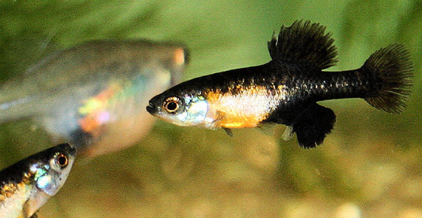

Systématique
- Ordre : Cyprinodontiformes
- Famille : Goodeidae
- Genre : Neotoca
- Espèce : N. bilineata
- Auteur : (Bean, 1887)

Neotoca bilineata est un petit goodeidé particulièrement singulier. Longtemps classé dans le genre Skiffia, il a été placé dans son propre genre monotypique, Neotoca, en raison de différences morphologiques et génétiques significatives. C'est l'un des plus petits membres de la famille des Goodeidae.
Le mâle dépasse rarement les 3 à 3,5 cm, tandis que la femelle peut atteindre 4,5 à 5 cm. Le corps est assez haut et comprimé latéralement. Le patron de coloration est caractéristique : une teinte gris-olive avec deux lignes sombres horizontales (d'où le nom *bilineata*) sur les flancs, bien que ces lignes puissent varier en intensité selon les populations et l'état émotionnel du poisson. Les mâles arborent souvent un liseré sombre sur la nageoire dorsale et une encoche très marquée sur la nageoire anale.
L'espèce est classée "En danger critique d'extinction" (CR) par l'UICN. Ses habitats naturels sont extrêmement fragmentés et subissent une pollution massive et un assèchement récurrent. En aquariophilie, elle est considérée comme une espèce de choix pour les bacs de taille modeste, bien que sa rareté en fasse un poisson destiné aux éleveurs spécialisés.
Neotoca bilineata est un poisson paisible et grégaire qui s'épanouit en groupe. Malgré sa petite taille, les mâles sont très dynamiques et passent beaucoup de temps à parader les uns devant les autres ou à courtiser les femelles. C'est une espèce relativement timide qui nécessite un environnement sécurisant avec de nombreuses plantes.
Il occupe principalement les zones de pleine eau et les strates supérieures, cherchant sa nourriture parmi la végétation flottante. Il est sensible aux changements brusques de paramètres et préfère une eau bien stabilisée.
Mode : Vivipare matrotrophe.
La reproduction est classique pour un goodeidé : fertilisation interne par l'andropodium et développement embryonnaire avec trophotaeniae. Cependant, chez Neotoca bilineata, les portées sont très réduites en nombre mais les alevins sont proportionnellement gigantesques.
Une femelle ne donne généralement naissance qu'à 5 à 15 alevins après une gestation de 55 à 60 jours. Les nouveau-nés mesurent souvent près de 15 mm, soit presque le tiers de la taille de la mère. Cette stratégie favorise un taux de survie élevé. Les adultes ignorent généralement les alevins, ce qui permet un élevage naturel en bac planté.
Dimorphisme sexuel : Le mâle est nettement plus petit et plus svelte. Il possède un andropodium très visible. Les femelles sont plus grandes, plus rondes et présentent des lignes latérales souvent plus marquées que les mâles en dehors des périodes de parade.
Espérance de vie : 3 à 4 ans en aquarium.
Cette espèce est endémique du bassin du Rio Lerma, notamment dans les États de Guanajuato et Michoacán au Mexique. Elle fréquente les sources, les canaux à courant nul et les zones littorales des lacs peu profonds (comme le lac Cuitzeo).
L'habitat se caractérise par des eaux calmes, souvent riches en algues et en plantes aquatiques flottantes (Lemna, Azolla). Le pH est alcalin et l'eau est moyennement dure à dure. Les températures varient de 18 à 24 °C selon la saison.
Répartition

Origine naturelle :
- Mexique : Bassin du Rio Lerma (Guanajuato, Michoacán).
- Zones de sources et lagunes d'altitude.
- Distribution extrêmement restreinte et menacée.
De nombreuses localités historiques sont aujourd'hui asséchées ou trop polluées pour supporter l'espèce.
Paramètres de maintenance
Température : 18 à 23 °C. Éviter de maintenir au-dessus de 25 °C.
pH : 7,2 à 8,2.
GH : 10 à 20 °dGH.
Courant : Nul à très faible.
Volume conseillé : 40-60 L pour un groupe, idéal pour un aquarium spécifique très planté.
Régime alimentaire
Régime : Omnivore à tendance insectivore et algivore.
En aquarium, il accepte les flocons et micro-granulés, mais le vivant et le congelé (nauplies d'artémias, daphnies, cyclops) sont indispensables pour une croissance optimale. Il consomme également le périphyton et les algues fines sur le décor.